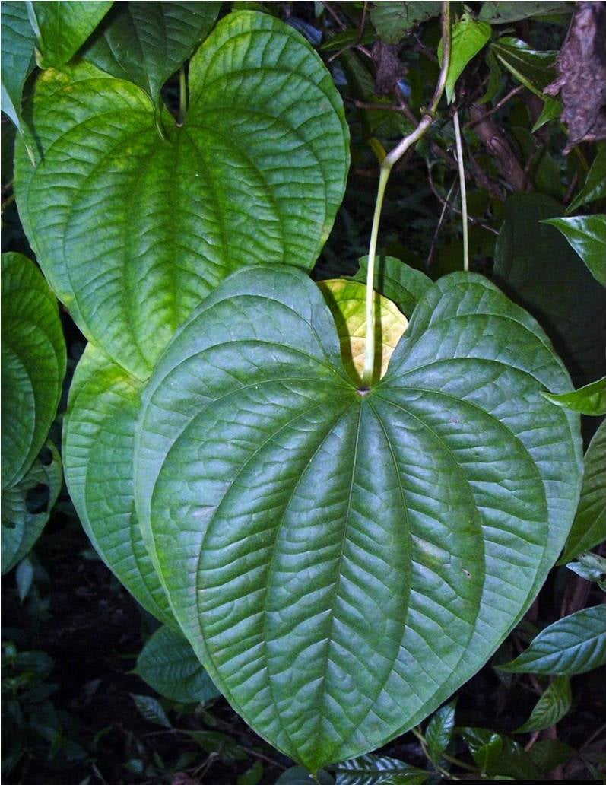

Air Potato
Air Potato known locally as ubi-ubihan, is a yam species with bulbils resembling potatoes. In Filipino traditional medicine, it's used to treat various ailments, including boils and diarrhea. However, caution is advised as some varieties can be toxic if not prepared properly.
- Scientific Name: Dioscorea bulbifera/Ipomoea batatas
- Benefits: Source of energy; vitamins and fiber.
- Cultivation: Trellised vine (air potato); loose soil for kamote.